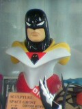
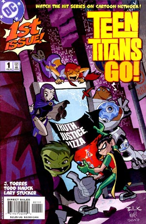
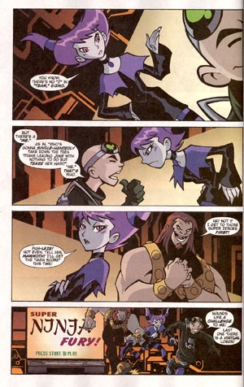
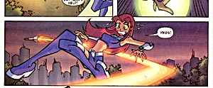
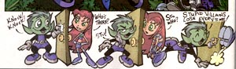
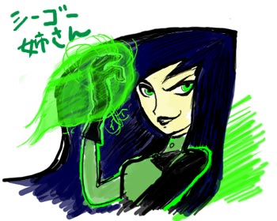
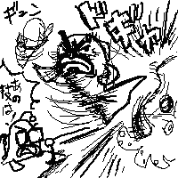
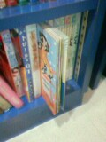
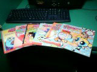
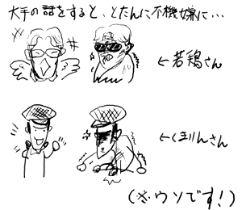

(日記とか言うモノ)

アメコミ屋でみかけたスペースゴーストのマケット。
かなりイイできなんですがダレが買うんだと。
とか言ってるとSpace Ghost Coast to CoastのDVDが届いた。
でも見てるヒマないよ。年末にたまりまくったアレやコレやといっしょにゆっくり鑑賞するか～。
ずーっと忙しくて日記の更新もままなりませんわ。まだまだ続くよ。
去年もそうだが、11月後半から12月末まではもーどうしようもないわ。マジで死にそう。
最近はTVもろくに見てませんよ。まったく。
とかいいながらちゃっかりアメコミは買ってたりするんだなこれが。
TEEN TITANS Go!

なかなかはっちゃけてますな。マンガスタイルつうよかむこうが認識しているマンガのイメージの投影といった感じも。ページをわたって展開するちょっとしたギャグもあるんだが、その間に広告がはいっていてぶちこわし。
編集の人、もうすこし考えたほうがいいよ。

JINX キター！
ちょっとキツめ。ほっぺの丸の解釈がちょっと違うような気がしないでもないが。それにしてもみんなデカ足だ。

スターファイヤーはめちゃめちゃスレンダーですな。頭身高いよなあ・・・

コマ外のストーリーとまったく関係のないデフォルメマンガ。こーいうのがどうやらマンガっぽいことらしい。
いずれは、こういう1タイトル形態から（日本のような）複数掲載雑誌形式というのにシフトしたほうが、いいんじゃないだろうかねえ。そうするともっと毛色に違う変わった作品がどんどん出てくるような気がします。
まあ、そんな制約がありながらもここ最近のアメコミの動きはなかなかすさまじい。
日本のマンガ初期の広がりを思い起こさせるものがある。かつてはアメコミも日本と同じように多様な広がりをみせた時代もあったんだけど、強烈なパッシングによって停滞しちゃったからなあ。
日本もパッシングはあったものの、国をあげてのパッシングではなく、しかもなあなあですませてきたおかげでこれほどまでの多様性をもつにいたったのだが、アメコミは無害なヒーローものと、それ以外はアングラという極端な発展をとげ、どんどんマイナーなメディアになってしまい、多様な中間層が空洞化。
しかし、最近の傾向をみると、大人でも子供でもないいわゆるティーンエイジャーを対象にした作品が増えてきているのがわかる。これはアメリカンアニメでもおんなじ。これからの展開が楽しみだ。
足りなかった中間層のスキマにバッチリハマッタのが日本のアニメやマンガだったんで、かなり影響は強かったんだだと思う。これはクリエイターだけじゃなく、編集の側にしても。
いやね、ココ最近日本の単行本に近い小型サイズのTPが増えてきてるのよ。しかもかなりの勢いで。かなり日本の漫画出版状況を研究してきてる。
あと、香港系の作家も増えてきたね。日本風の絵柄をもちながらも英語圏でもコミュニケートでき、アメリカと同じスタイルでコミックを刊行してきたってとこが使いやすいんだろか。ちょっと違和感あったけど。
ぎゃーたすけて。なにもいらない、暖かい布団だけが欲しいです。
修羅場は続くよどこまでも。
噂通り、本日25日に日本ニックのサイトが立ち上がりましたな。
ケレンみはないけれど、わるくない。
検閲式だけどちゃんとBBSも付いてるし。さーて、おちついたらリクエストしまくるゾっと。
番組紹介は薄いけど、公式なんてものはまあこんなとこでしょ。
ちゃんとジジまで載ってるよ！しかも10日には新作だって！
それにしても、アングリービーバーズまでがピンで紹介されてんのに、レンとスティンピーがロッコーとセットになってるのは納得いかーん。
レンとスティンピーといえば、今月のPpGのコミックにスティンピーが出てきてるんだよな。
マジ修羅場。ていうか絶対締切に間に合わない。月末までTV見てるヒマもなし。ビデオがどんどん貯まってゆく日々。
てなわけで、サイトトップを元にもどした。
いくらなんでもあのままが長く続くのはちょっとムサすぎる。放置になる前になんとか手をうちたかった。
元にといっても精神状態を反映してか元通りじゃなかった(笑)
まあ、今日はなんとかコミックは入手できたけどね。じっくり読んでるヒマはないが・・・
猫VS犬ってことですが、トーキングドックが調子にのりすぎなので、キャットのほうに感情移入。
みんなにちやほやされていい気になってんじゃねーよっ。
幸せは自力で強奪するもの。がんばれキャット。
こーいうタイプは好きです。でも友達には欲しくない。このへんが複雑なとこ。現実でイヤなやつほど物語の世界では輝くものなのか。
「えーい、おまえも洗脳してやるニャン」
すっかり忘れてたので、あわてて注文。
Space Ghost Coast to CoastのDVD。
3000円ちかくするので、まあそれなり・・・とか思ってたんですが、よく見りゃ2枚組。安っ！
で、ついでにぼやーっと眺めてたら、いつのまにやら
The
Fairly Oddparentsって映画になっとんたんですな。(ちなみにこれの主人公の Timmy Turnerの声はバブルスTara Strong
様） といっても、劇場公開ものではなさそうだけど。
うーんと、これがオーイェイカートゥーンからスピンオフしてシリーズ化したのが2001年だから約その2年後に長編エピソードが制作か。てことは、このまま順調にいけばジェニーの映画も2年後2005年の夏くらいには出る計算。
で、長編エピソードならDVDになる可能性が高いので、その時には確実にジェニーが見れる！
（また妄想ロードマップを作ってるよ・・・＞俺）
できればその前に日本ニックで放送してほしいものだ。
さて、明日も仕事なんですが、（ああ、年末進行の時期だよ）時間があったらパワパフのコミック買いに行きたいな。しかし、なんちゅうか連休てのはやだね～。こいつのおかげでしわ寄せだらけ。特に月曜休みとかだと最悪だ。
わざわざ連休にしないで水曜とかとびとびの休みのほうが嬉しい。
風邪でもひいたのか、調子悪い。
それにしてもディズニーチャンネルの番組ロゴはうざい。
コミックにはさまる広告並にうざい。うざいうざいうざいうざいうざい～～。
それから、ディズニーチャンネルのwebサイト、使いにくい。
いちいちFlashなんてつかってんじゃねーよ！
番組表までflashかよ！使いにくいんじゃ。ボケ。そこまで凝ってるわりに中身薄いよ！
最悪なwebだ。どあほう。あんなwebサイトなんか作ってんじゃねーよ。作ったのダレだよ。
そのくせ、サイトの使用条件のとこだけは普通にHTMLだ。
なんか力のいれ具合が間違っちょるよ。
はっ！！
そーいや、キム・ポッシブルもファンアートなんか描いたら訴えられたりするんでしょーか。
なんかそーいうこと考え始めたらちょっとしぼんできた・・・・
突然忙しくなって、ディズニーチャンネルみのがした～。蒸気船ウイリーから始まるとこがらしいなあ、とか思ってたくせに。まあ、キム・ポッシブルだけは録画しておいたので、ようやっと鑑賞。
うーん、さすがディズニーといいましょうか、良くできてる。アニメ自体のクオリティは高いね。
ただちょっとインパクトが弱いかな？
キャラ的にも「濃い」CNやニックのものに慣れたせいか、やや弱い印象。
動きとかは凄くいいんだけどね。
それにしても似たような「グルーブスカッド」とか「トータリースパイズ」とかのバタ臭いこと(笑)
キムはスマートだ。
ただ、色気はねーなあ(笑) なにしろチアガールのあのカッコでハデなアクションしてもパンチラひとつありません。うむ、さすがはディズニー。キムも「へそだし」のきわどいカッコしてるわりにはなぜかセクシーフェロモンは皆無って感じ。あれは多分計算されてる。ビヨンドやスーパーマンは違うんだよね。似たような線の少ない造形でも、多分ビミョーな加減でこうも違ってくるものか。デフォルメの奥深さを感じたよ。
そうそう、この作品はかなり研究され計算されて作られてる。キャラ配置から小道具まで。
再生されたディズニーの始まりが「リトル・マーメイド」であったように、これは間違いなくその系譜の流れにあり、現在の到達点。
あくの強さはないけど、（ニックやCNのアニメってたまに「なんじゃこりゃ～！！」ってのがあるけど、そーいうのはない）良品であるのは確かかな。まあ、まだ始まったばかりだからわからんけどね。ヘンなエピソードとかあるのかな～。今後も期待。それにしても、アゴがよく動くアニメだ。
多分レギュラー悪役となるだろうDr.ドラッケンがややキャラ的に弱いのがちょっと気になる。見た目はジョーカー、中身はモジョ、って感じだったんだけど、正直どちらにも及ばない。
でもね・・・
その助手（？）の緑炎使いのシーゴー姉さんがいいのよ！！！！！！！
俺的にはキムなんかより全然最高！アクションもカッコイイし。たまんね～。
シーゴー姉さんが出る限りキム・ポッシブルは見ますよ、ええ。
吹き替えもカートゥーンではおなじみ「佐藤ゆうこ」ってのもバッチグー。お姉さま声がいかしてる。

むう、改めてみるとムサいサイトトップだなあ・・・しばらくしたら元に戻そう。
今日はヘルシングの最新刊を買ってきた。
このマンガ好きでねえ。アニメはどーしようもなかったけど。
それにしても全然話が進みません。連載当時からも思ってたけど、宴が始まってからえらい遅々とした展開。この巻では主人公なぞちょこっとしか出ません。でもこれでいい。
単行本になってみると印象がまるで違った。これはすでにマンガではなく「詩集」なんだよ。
韻をふんだ繰り返しの無数の台詞たち。
それは台詞ではなく、「詩」だ。
紅蓮の炎に焼かれながら、痛みと苦しみと狂気が共に笑いながら奏でる、冥府の詩。
すばらしい。イスカリオテの詩など最高だ。
でも、雑誌で読んだときと台詞が違うような気がする。多分書き換えてるんだと思う。そのへんにはこだわりがあるとみたが。
新刊といえば、週刊少年『』が本になってもうじき出版されるみたいね。一応買っとくかな。
で、話は変わって海外のティーンエイジロボットファンサイトってのもぼちぼち出てきた様子。
向こうじゃ「MLaaTR」って略してるみたいだね。
たとえば、Jenny's World
ここの特徴はなぜかオタク少年Sheldonが人気あること。
なんだかファンアート見てると、のび太としずかちゃんを思い出す。
おもしろいなと思ったのはこのファンアート。
やっぱりパワパフ好きはこっちにも流れるものなんだねえ。
あっ、puffuncleことペンシラーのクックさん投稿してる。この人も好きやねえ。
「MLaaTR」で検索してみると、意外とひっかかります。
最近じゃかなり日本のマンガやアニメの影響が強いのか、日本のファンアートのノリとあんまし変わらなかったりする。例えば、これ。
マンガタッチに擬人化～～。
えーと。トップを「おわび版」に。
正直、初めはちょっとしたお遊びだったつもりがいつのまにかこんなことに・・・・
なんちゅうか当初予定していたものとは全然違ったヘンな方向にいってしましましたなあ。最初は適当なとこで（ブロが振り向いたあたりで）さくっと、普通に戻すつもりだったのですが・・・
制作者の遺志とは別に暴走してゆくってことってあるもんなんですなあ。
しかも、なんかBBSで話題にあがったとき、何度も「いや、なにも考えてない、ない」とか書き込もうかとも思ったけど、それでは許されないようなオーラが・・・
オシシ仮面を書いてるフニャコな気分でした。
けっきょくこうなったワケなんですが、よく考えたらパワパフファンの大勢を占める女性陣にはさっぱりわけのわからんパロディになってるんじゃないかとドキリとしましたが、時すでに遅し。まあ、比較的PpG男性ファンの比率が高そうなうちのサイトなんでまあいいっしょ。
ていうか、このバージョン、全然パワパフサイトに見えません！！！ 失敗か～！
またまたコミケ用にマンガのご依頼をうけたので、その練習もかねて～。
そんなこんなで、12月の新作スペシャルは楽しみだなっと。
話は変わって、
こんなサイトを発見。すでにジェニーをバナーにするサイトが日本に登場ですか！
あーかわいい。
日本では徐々に盛り上がってきております！日本ニック様どぞよろしく～
いよいよ年末商戦ってことでいろいろと発表されてますが。特に気になってたのは
東芝のDVDレコーダー「RD-X4」
これを解説するのに、
「12bit/216MHz 映像DAC」「アクティブIV変換型DC構成ビデオアンプ」「低インピーダンスコンデンサ」「ガラスエポキシ両面基板」「アドバンスト・リアル・シアター・モード・プログレッシブ回路」「トロイダイル型パルストランス」
「低インピーダンス電解コンデンサ」
など。わけのわからないけど、なんだか凄そうの言葉が並ぶのが、このシリーズらしくてゾクゾクします。
クスリの裏の成分表を見ているようでたまらんね～～。
松下だったら、こういう表現ではなかったりするんだろうけど、でも最近の松下製はなかなかにトンがってるから、それはそれでいいかんじ。最近の製品見てると技術の松下って感じもしないでもない。
むしろ最近のSONYがダメすぎ。技術のカリスマ的な部分がヘタレすぎ。マーケットニーズからもはずれすぎだし。出井の「私の流儀」なんて社員の研修でしか見ないよな番組を流してる時点で、「おまえバカか？」ってとこに気が付きなさいよまったく。
いくらスカパー録画が楽にできても、自己閉鎖型のコクーンじゃねえ。
最近でたポータブルAVプレーヤー「PCVA-HVP20」も中途半端でビジョンが見えてこないものだし。ポータブルなのにmpeg2のみ再生とかわけわかんない仕様だしなあ。でかくしてどーするよ。
脱線したのでリローデット。
RD-X4よさげなんだけど、
スカパー!との連動機能については、「現在紹介できる機能ではないが、ニーズがあることは理解している。スカパー!との連動機能も含めて、やりたいこと・やならければならない長いリストがあるが、実現できるのはタイミングなど諸事情が合致した時」(同)と説明した。
てとこが残念。まだなのか～～～。また迷って買えなさそう・・・
ところでTVデジタル録画といえば、こんなのも発表されたが・・・
これダメでしょ。
だってさ、この値段でこれ買うなら、複数台のキャプチャユニット買ったほうが・・・いいでしょ。でもって、そんなにたっぷり録っても、見る時間ないっしょ。
というわけで、CNの番組情報が更新されました。
あああああああああ、一時はお騒がせしてもーしわけなーーーい。
休日にはおわび更新でもするかね。
さて、とりあえす、PpGの日本語吹き替え新作がやっと拝めるってことですな。
さりげなーく、チャンネル質問箱で新作のカットを使ってますな。
とりあえすCNの12月はクリスマスずくしってことで。むう、サムライジャックはこなかったか。
スカポン太の妄想ロードマップはずれまくり。
サムライジャックもTeenTaitansもなくて、かわりにキタのはジャスティスリーグの新作か。ねえ、バットマンの未公開エピソードはもうやらないんでしょーか？それともバットマンの新作映画、やるとかポしゃったとか噂がたってますが、もし公開されるならそのタイミングを狙ってるん？＜また妄想願望が・・・
さりげなーく、「ウッディー・ウッドペッカー」が開始。ついにユニバーサルものまで。
まさにディズニー以外のものはすべてココに！って感じですな。（まあ、他にはFOXとかnickとかもあるけど）
世界のゲームはここに集まるって感じのプレステみたいだ。
さしずめ、ニックはドリームキャストか（やや泣） ディズニーはX-BOX？(笑)正統派ってことで64って筋もあるが。
それにしてもあいかわらずシアター作品はDIC Entertainment。すきやのお。
で、インベーダーズィムなわけだ。
DVD発売決定ってことでこちらはそのインタビュー記事。
なにやら、おだやかにさりげなくニックに対して毒吐いてる？
ニックはあんなアニメやこんなアニメを流してるくせにマニア層にはうといってこと言ってるのかな？ニックで放映されたバージョンはけっこう編集はいりまくり（あれで！！）だったようなので、このDVDにはちょっと期待。なんかlimited
editionもあるみたいだし。でも日本からじゃ難しいかなあ。まあ、とにかくいろいろあったみたいね。
なんかジャック・マシューズの「バトル・オブ・ブラジル」を思い出した。
偶然ガンスリンガー・ガール見た。
主人公（多分）のヘンリエッタがバブルス南里侑香ってことでちょっぴり気になったいたやつ。
うーむ、全然違うんでわからなかった。バブルスのキンキン声ではなく、物静かな押さえた感じでやってたので、言われないと気が付かないだろうなあ。
正直設定を読んだときに、あまりのあざとさにかなりゲンナリしてたんだが、実際みてみると・・・
たるい。
うーむ、制作者というか原作？は狙ってるわけではないんだろうけど、あまりのソレ好みな設定のためにやっぱりゲンナリ。よくわかんないけど、最近の（かどうかわかないけど）日本アニメってば、男性キャラとかはそれなりなのに、女性キャラとなるとどれもこれも似たような印象をうけるのはなぜだろうか。とくにこのアニメ、少女たちが髪型とかが違うだけでみんな一緒に見える。
カートゥーンの見過ぎで、繊細な差異の判別が鈍くなったのか？オレ？
そーいや、新作長編の「'Twas the Fight Before Christmas」、アメリカのCNでも放送するようだ。ビデオ・DVD発売ってなんの意味があったんだ？順序が逆って気がしないでもないけど、たしかにこのほうがビデオは売れるような気がする。
DVDといえば、まだちょっとしか放送してないのに「魁！！クロマティ高校」DVD化決定済み。やはり今やそーいうロードマップなのね。それにしても一巻がたった60分なのに3,800円。しかもなぜか片面2層。今時のアニメのDVDってそーいうものなのだろうか？
「活字ばなれ」
なんて言葉を聞くといつもむかつく。
だいたい、本当に「活字ばなれ」なんて現象おきてるのかね？むしろ一昔前よかテキストはあふれてる気がするけど。本屋は新刊であふれ、次々と（オレの読みたい本が）消えてゆく。昔のほうがもっとペースは遅かったような気がするのだが。本じゃなくても、wwwなんてなんだかんだいってもテキストだらけ。ケータイでだってメールがゆきかってる。今の若い連中にしたって、テキストを読まない日なんてないんじゃなかろうか。
むしろホントに活字から離れるほうが難しい世の中だっていうのに。
まーだいたい、こーいうこと言う連中ってば、メールやwebなんかのテキストは「字」じゃないって思ってるらしいからしかたがないんだろうねえ。ここでいう「活字」ってのはあくまで「新聞」か「本」のことなんだよね。でもって、雑誌やマンガは「字」には含まれてないと。当然ながら、TVのキャプションは「字」じゃないと。
たぶん、もっと「字」だけの「本」を読めってことなんだろうけどさ。うーん、それでも昔よか「字」だけの「本」もいっぱい出版されてるような気がするんだが・・・「ライトノベル」とか娯楽系の本もまた「字」じゃないってことなのかな？
いや、そもそも、この「活字ばなれ」の「活字」に違和感を感じるわけよ。いまどき「活字」なんて読みたくても読めない。数年前から「写植」になってるし、最近は「デジタルフォント」。今は「活字」で印刷してるものなんて見つけるほうが難しい。そもそも、活版印刷じゃなくて今はほとんどオフセット印刷だもの。だから「活字ばなれ」なって言ってる連中のいう「活字」ってのが何を差してるのかがよくわからんのよ。映像や音じゃなくて「テキスト」「スクリプト」のこと？って解釈してたんだけど、そーなると前述したように、今はテキストにあふれてるわけで、そーなるとますますもって「活字ばなれ」って言ってる意味がわからない。
辞書引いてみると「printing type」と訳されていた。なるほど「印刷した文字」を意味する言葉として使っているのかもしれない。って、文字情報は印刷されないと意味ないってことなのか？
・・・うーん、やっぱりよくわからねえ。
ま、それはともかくだ。自分の経験からすると「本をもっと読め」とかいうやつに限ってたいして本なんか読んじゃいねえ。食事を取るように本を読んでいる連中ほど何も言わない。オレの知る限りではね。
で、まるっきり話は変わるんだが、最近はDVD化までがアニメ制作の一環になっちゃてるみたいですね。監督日記を読むと、全部終わってないのに、同時進行でDVD作業をやってる。放送はもはや過程の一つに過ぎないってことか。
スターウォーズ短すぎ。以上。
キルビルやらマトリックスのおかげで、やや影が薄くなってしまったような「フレディVSジェイソン」
まーなんちゅうか、アメリカ版怪獣大戦争みたいな気がしないでもないんですが、それに負けない気がしないでもないような気がしないでもない・・・やつが来年来るそうで、
アメコミではそれなりに有名だったりするこのシリーズ。いや、けっこう人気あんのよコレ。（多分）
メジャー級のアメコミの映画さんざんやったから、そろそろこういうB級どころのアメコミもうじゃうじゃ出そうな予感。エルティングビルのやつらが喜びそうだなあ。
アメコミといえば、「BAD GIRLS」（※BAT GIRLじゃないよ）つうアメコミが気になってるんですけどね。このカバー絵はモロ好みですげえイイんですが中の絵は違うんだよなあ。そのせいでいまだに買えません。この表紙絵のタッチでやってほしいのに・・・・
そーいや、スクービードゥのTPBが出てました。ペンシラーによってはやぼったかったりするんですが、たまにかわいいヴェルマとかダフネとかの回もあったりしてちょっと悩みました。結局買わなかったけど。
このカートゥーン系コミックTPBシリーズ、次はジャスティスリーグですね。それよりPpGのTPBの続刊を。
関係ないけど、サウスパークもクリスマススペシャルみたいだね。「ウンチまみれのクリスマス」。らしいというかなんちゅうか・・・・
そうそう、百物語みたいな地方局アニメといえば、バトルプログラマーシラセってちょっとおもしろいね。不自然で無意味なキャストだったりするけど、もりあがりそうで盛り上がらないノリがなんとも。強力な敵とか出てきそうな感じなんだけど、このままだら～っといってほしい。
京極夏彦巷説百物語はけっこういいね。
最初は正直「アニメ～～？」ってことでちょっと疑問視してたんだけど、なかなかいい。
絵づくりがすごくよくて、斬新。なにより、コントラストが強くて黒がシャープなのがいいよ。好み。
デジタルエフェクトもいい感じに機能してるし、美術のデフォルメかげんがケレン味たっぷりですばらしい。ゆがみまくった建物とかすごくいい。丁寧なつくりも好感がもてる。
正直東京ムービー見直した。
これだよ、これ。ヘルボーイも実写なんかで映画化しないで、このタッチでやってほしかったよ！！！
ヘルボーイ、ミニョーラの絵じゃなきゃおもしろさ半減でしょ！
百物語なんとなくキャラクター見てるとモンキーパンチを思い出すのはなんでじゃろ？
それにしても京極夏彦好きだなあ。またも声優やってやがんの。
ていうか、こいつ絶対キャストとかにもクチ出してるよきっと。その話ごとのゲスト、自分の好みでリクエストしてんじゃなかろうか？なんかそんな気がしてならない。だって、清川元夢とか島本須美とか古谷徹とか出てくるんよ。しかも島本須美にあえぎ声とかさせてるんですよ、まったく・・・・
それにしても、最近こういう地方局のみのアニメとか増えたねえ。これは制作側主導、作品主体の体制に切り替えつつあるってことだろうか？なんて考える。メジャーなキー局でやったって予算はしょぼいのはかわらないが、多少マイナー局でもあちこち寄ればそれなりだし、むしろ放送は宣伝費の一環みたいなノリで、その後のDVD販売で稼ぐ。そんな図式が浮かぶんだが実際のとこはどーなんだろ？
そーいや、ビッグオーのように日本では放映されてないけど、海外では放送されてるっていう海外主導の日本アニメもいまや何本かあるみたいだし、イロイロと変わってきてるみたいだなあ。
ところで、世界で大ヒット！な「ファインディング・ニモ」。
私はこれしばらく「ファインディング（Finding)」ではなく
「ファイティング（Fighting)」だとばっかり思ってました。
だから、てっきりこんなアニメかと・・・

スーパーバトル魚アニメ「ファイティング・ニモ」・・・・
なんかこっちのほうが見てみたい気が・・・
期待しすぎるとそうでなかった時に落ち込むのが辛いから、はっきりするまではあまり考えないようにする。ってのはなにごとにも基本でしたな。
わかっていても、ことパワパフとなると押さえが効かないのはしょーがないッス。恋愛といっしょで。
とまあ、いいわけモードでリハビリ。
まあ、新作がそもそも作れててもいないうえに、新作の予定もまったくない作品のファンだったりする人たちに比べれば贅沢な悩みですしね。
てなわけで、怒濤の更新。
といっても、項目数が多いだけで、一つ一つはたいしたことないんですが。
で、今日は「タイニートゥーン」と「トータリースパイズ」とか見ました。
今日のタイニーはバットマンのパロディ。これは一度見たかった。
実写TV版のパロディも入ってるとこがなかなか。しかし、このスタッフでホントにアニメバットマンを作ることになるんだから世の中面白い。ここで一瞬だけキャットウーマンパロキャラが出てくるんだけど、タイニーの動物キャラ風ではなく、ブルース・ティムの女性キャラっぽくなってるのがちょっと嬉しかった。
「トータリースパイズ」なんかなにげにちゃんと見てるかも。
今回はちょっとだけおもしろかったかな。なんとなく、ダーティペアとかバブルガムクライシスとかを思い出した。あの時代の雰囲気なんだよなあ、これって。しかし、男性キャラがどーにもしょぼいのはなんとかならんか。
3人の中ではやっぱりアレックスが好き。今回の花飾りはよかったかも。

今日寄ってみた漫画喫茶。確かに絵本版ガールズがあった。
ふう。
やっぱり「新作、長編」は「新作の長編」だったみたい。なにが、「新作と長編」ですよ絶対！だよ。アホかオレ。くそう、「、」なんてはさまないで素直に「新作長編」と書いてくれなかったんだ～。
ていうか、普通はそう読むよな・・・ ちゃんと正式発表されるまでうかつなこと言わないのが普通だよな、未確定なんだし。 いや、いいんだ、自分がアホなのはわかってる。むしろ、この暴走によって他の人にも迷惑かけたんじゃないかと思うのが心苦しい。
ああ、前に「コミック読んでるからそんなに飢餓感ないかも」とか日記に書いてたけど、ありゃ嘘だな。本当はずっとずっとダレよりも餓えまくってたんだよ。願望のほうが激しくむき出しになってた自分が恥ずかしい。今の自分は餌のない針にも引っかかってしまう愚かな魚です。ああ、掲示板のカキコ削除したいよ。ごめんなさいロクさん、いいかげんなこと書いて。
そーいえば、パワーパフガールズのまもろうネットの最後のほうの章、まるで今のワシのことのようだ。ふふふ、ははは、あーはっはははははははははははははは。（ ´Д⊂ヽ は は ・・・・
復活したレンとスティンピーがアメリカで公開されている。
より過激になったためかニコロデオンではなく、Spike TV というチャンネルで流れている。
しかし、調べてみると数回やったっきりで放送が止まってしまったようだった。
まあアチラはペースが遅いからいつものことかなあ・・なんて思っていたが
massangeanaさんのとこのサイトの日記を読んでいたら、こんな記述に目がとまった。
「あたらしいエピソードが完成する前に予算と期日をつかいはたしてしまったためらしい」
なんと～～～！
それは「John K. は天才的だが時間や予算をまったく気にしない人 」だかららしい。
日本より予算も期日もあるだろうに、さすが、米アニメ界の裏カリスマ。
ああっ、てことはもしかして今後も放映されることはなく、「幻のカートゥーン」になってしまうだろーかね。きびしー。
で、関係ないけど、ニックJPのサイト公開予定日は11/25らしいという噂。
昨日はうかれすぎたかも。
なんにしても、今は黙って待つしかないわけで。
興奮のあまりトップ絵描いちゃったけど、その前のクリスマススペシャルのトップ絵はよく考えたら、短い命だった。こんなに早く情報が舞い込んでくるとは思わなかったからなあ。
それにしても、米CNで流れてる予告ムービーのバブルスの顔はヘンだ。
オフィシャルであんなことやられてはファンアートパロディの立場は・・・
これだからパワパフは油断できん。
新作、海外で発表されてるエピソードはいまだ13エピには足らないけど、日本では何話やるつもりなんだろうか。第5エピソードの最後はずーーーっと噂だけはあったロックオペラだったらいいなあ。
おちつけ～、おちつけ～自分。
こうなることは自分で予測していたではないか。新作エピソードの数をカウントしてみたりとかして。
でも、やっぱりそれが現実のものとなると話は別。
はああ、12月かあ。
いよいよ、ブロッサムのバイト姿や増殖アメーバーボーイズとかが見られるんですね。ドキドキ～。
はっ、新作ビデオ買っちゃったよ。
いいんです、あれはご祝儀ってことで！！
うーむところで、この第5シーズン分ってDVDで出るんだろうか？
今までのCNの流れからするとなったことないんだよなあ。今までのは地上波だったからだし。
でもパワパフだけは特別だろうか？
どうせなら、今までのの再収録してCNで新に出したりしないかなあ、1枚1500円くらいで。
アンダーグラウンドの別吹き替えバージョンも特典につけてさ！
ともあれ、CNに加入しててよかった～。ある意味スターウォーズよか激キラーコンテンツですよ。
ああ、感動で逆にあまり多くを語れない・・・・
早寝したら早起きできた。しかも異常なほど朝早く。計算してみるとたしかに睡眠時間はいつもといっしょなので、なるほどそういうものかと思ったが、それをあてにして起きれなかった場合が怖いので、やっぱり今後も夜更かししちゃうのだろうか・・・
夜はだんだんと集中力が高まってくるので、それをあてにしてるとこもある。寝起きはしばらくはボーっとしてるものなあ。でもやっぱり太陽の周期と同期してるほうが身体にはいいんだろうなあ。
お絵かき掲示板ってすごい発明だよなあ。と、ときおり思うことがある。詳しく調べて無いけどこれ日本独自のものだよね？海外のサイトだとめったに見ることはないのに、日本のサイトだと今や当たり前のように付いてたりしてるもの。しかも海外でみかけても「oekaki」の名で、そのまま使われてるし。
ココ最近 爆発的に普及してるとこみると日本人は「お絵かき」好きなんだなあとしみじみ。海外のトップクリエイターとかやっぱめちゃ凄いけど、ボトムレベルでの層の厚さはやはり日本が一番か？
小学生とか中学生とかでもめちゃめちゃうまい人いるんだもの。
ローカルでちまちま描いてるとごまかしも利くけど、オンラインだと下書きすら画面上での一発勝負。画力がモロにでるからヘコむこともままある。でも修行にはいいかも。集中力の問題もあってか、時間をかけて少しずつ描き加えていくより、そこだけで一気に仕上げる場合のほうが勢いがあっていい時もある。
お絵かき掲示板設置しようかとも思ったこともあったけど、いろいろ考えていまのとこやめている。
理由はといえば、「レス」だ。
せっかく描いてもらっても、レスのしようがない、レスするきもない、なんて場合に困るから。しかも自分の場合「でも、その箇所はちょっとヘンかも」とか「もっと丁寧に描いたほうがいいよ」とか「なに描きたいのかわかんないよ」とか余計なこと書きそうなんで、マズイかな～なんて思ってる。好きで描いてるのにクソみたいな批評されたってねえ。
そーいえば、管理人不在でも自動回転してる板とかみかけると、「別にいいのか」とも思うこともあるけど。
まあ、今となってはお絵かき場所には困らないほどいっぱいあるから、いまさら自分とこにつけなくてもいいかなって思いもあるし。コミュニティだけのサイトにはしたくないって思いもあるかな。
あっ！サイトは人それぞれだからどんな形態もOKですよん。
・・・ここ、自分の独白な気分で書いてるからそれほど意識してないんだけど、「いつもお忙しいみたいですねえ」なんてこと言われると、「はっ！読まれてる！」なんて思ってドキッとすることもしばしば。その瞬間に「余計なこと書いてなかったよな、えーとえーと」とか脳内サーチしてたりします。だいたいにおいて、こういうのって書いた本人よか読んだ人のほうがよく憶えてたりするからタチ悪いんだよなあ（笑）
「そういえば、アレ ○○ですよねえ」「えっ、そんなのあるんですか」「日記に書いてたじゃないですか～」「！・・・・」みたいな（笑）自分で書いてて忘れてる。
ぷにケにいった影響か、お絵かきしたい気分が高まっていろんなとこで絵を描いた。
それはともかく、PpGのカンボックス入手しました。ガチャじゃなくてセット購入のトキメキのない薄汚れた大人買いですよ。そうはいっても、身近にこのガチャがないんだもの。しかし、この商品、入荷数が少ないのか一人でガチャ回しまくる連中が多いのか、すぐに見かけなくなるなんて話をよく聞く。一部においてガールズの人気いまだおとろえず。
噂には聞いていたけどちっちゃいね～。でもストラップにはちょうどいい大きさ。マグネット版もなかなかいい。ちっちゃいの大好きなんで自分的には大満足。
ところで、ティーンエイジロボットの背景を描いてる方のサイトのニュースを見ると、なにやらティーンエイジロボットは好評のようで、第2シーズンも順調に決定してるようす。よっしゃー。
ところで、この「Thanks to great ratings」なんだけど、「ratings」ってなんだったっけ？視聴率でいいのかな？アメリカのTV業界じゃなんか別の意味もあったような気もしたんだけどちょっと思い出せない。文脈的に「高視聴率」でいい気もするけど。
今日は小町屋の犬さんのおさそいで、「ぷにケット」に行って来ました。夏コミに続きこのてのイベント2回目。
今回のはまあ、名前からしてわかるように、ぷに～な感じのサークルが一同に集まるイベントなようで、規模としては中規模ってことになるみたい。
これくらいがちょうどいい。コミケは巨大すぎた・・・ 一通り回るのにも苦にならないし、なにしろちゃんと端から端まで見えるんだもの。でもさすがに男性比率は高かったですね。でももちろん女性もいました。しかし、みんな顔色が悪く見えたのは気のせいだろうか（照明のせいか？）。
「ぷに」ってことでパワパフもOKってことみたいなんですが、圧倒的に「どれみ」が多かったです。「どれみ」ってほとんど見たことないんだよなあ。
そこでは、エヴァラの若鶏さんもいて、メールではちょっとお話したこともあったんだけど、お会いしたのは初めて。今回は「みぱら」というMILLON☆DROPS、むしパンダ、エヴァラ合同サークルってことで参加なされていました。というわけで、みぱらの新刊PpG本をゲットしたぜ！（若鶏さんはPowerPopネタ、うーんタイムリー）
むしパンダさんとこも情報だけで、現物は入手してなかったので、今回入手できてラッキーでした。
あ、そういえばエヴァラってもともとどれみサークルだったのに、なぜかどれみ本がない・・・気にせずこれからもパワパフ本をもっと出していっていただきたい！そーでなくても減ってるらしいし、PpG本。
BOGYのくまりんさんともお会いしました。こちらも情報だけで現物は持ってなかったので入手できてラッキー。予想どおりエロエロでしたが(笑)。本にはパワパフ本はこれでお終いみたいなこと書いてあったけど、次もPpGで出すとか出さないとか・・・期待してます。
しかしさすがに地上波終わってからずいぶんたつし、必ずしもケーブルやCSに加入してまで・・って人も意外と少なくてなかなか難しいとこ。
ところで気になったのは「大手」って言葉。
なんか、ぷにケットレベルでは中小サークルでも気楽に参加できていごこちがいい、でも最近は大手も参加するようになってきてねえ、チッ。みたいなこと話しててたんですが、大手って？

あいにくどれが大手なんだか分かりませんでしたが、単純に同人誌が1000円以上するとこが大手なんだと勝手に推理して見てました。あってるかなあ？
今回以外ににもPpG同人誌の情報が入手できそうなので、近々ひさびさにファンコミックのページを更新しようと思う。
今日はなんだかずーっとだら～～っとしていた。今までの反動か、やたらに眠い一日だった。
グレゴリーホラーショウってゲームまで出てたのね。「カートゥーンホラー」ってとこが泣かせる。
ちょっと検索してみたらこんなの見つけた。
e-mangaっていうオンラインデジタル漫画雑誌にグレゴリーホラーショウが掲載！ってことなんだが、それより12月から「OH! スーパーミルクチャン」最新作。ってほうが気になった。
また眠くなってきた。ああ、布団がきもちよい季節にもなったことだしなあ。
そーいや、トータリースパイズ見たけど、これは・・・・やっぱ1シーズン分で終わりかな？
いやその・・・・イマイチ。アレックスはちょっといいかなとは思ったけど。
予告編はなかったけど、主題歌付きなんで多分地上波でやってたのそのまんまだと思う。これの未放送分をわざわざCNが取り直すとは思えない。オープニングをオリジナルに戻したPpGの時とは扱いがあからさまに違う。まあ、わかるけど。